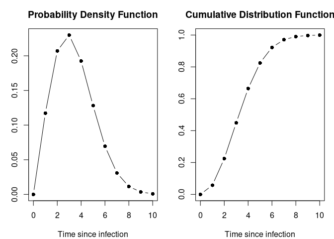

epiparameter is an R package that contains a library of epidemiological parameters for infectious diseases and a set classes and helper functions to be able to work with the data. It also includes functions to extract and convert parameters from reported summary statistics.
epiparameter is developed at the Centre for the Mathematical Modelling of Infectious Diseases at the London School of Hygiene and Tropical Medicine as part of Epiverse-TRACE.
Installation
The easiest way to install the development version of epiparameter is to use the pak package:
# check whether {pak} is installed
if(!require("pak")) install.packages("pak")
pak::pak("epiverse-trace/epiparameter")Quick start
To load the library of epidemiological parameters into R:
eparams <- epiparam()
eparams
#> Epiparam object
#> Number of distributions in library: 106
#> Number of diseases: 24
#> Number of delay distributions: 83
#> Number of offspring distributions: 10
#> Number of studies in library: 42
#> <Head of library>
#> disease epi_distribution prob_distribution
#> 1 Adenovirus incubation_period lnorm
#> 2 Chikungunya incubation_period lnorm
#> 3 COVID-19 hospitalisation_to_death weibull
#> 4 COVID-19 hospitalisation_to_death lnorm
#> 5 COVID-19 incubation_period <NA>
#> 6 COVID-19 incubation_period weibull
#> <100 more rows & 53 more cols not shown>The library is an <epiparam> class, which underneath is a data frame.
Each entry of the library can be converted into an <epidist> object to be used.
influenza_incubation <- as_epidist(eparams[12, ])
#> Using Linton et al. (2020) <10.3390/jcm9020538> PMID: 32079150.
#> To retrieve the short citation use the 'get_citation' function
influenza_incubation
#> Disease: COVID-19
#> Pathogen: SARS-CoV-2
#> Epi Distribution: incubation period
#> Study: Linton et al. (2020) <10.3390/jcm9020538> PMID: 32079150
#> Distribution: lognormal
#> Parameters:
#> mu: 1.456
#> sigma: 0.555The <epidist> object can be plotted.
plot(influenza_incubation)
Parameter conversion and extraction
The parameters of a distribution can be converted to and from mean and standard deviation. In epiparameter we implement this for a variety of distributions:
- gamma
- lognormal
- weibull
- negative binomial
- geometric
The parameters of a probability distribution can also be extracted from other summary statistics, for example, percentiles of the distribution, or the median and range of the data. This can be done for:
- gamma
- lognormal
- weibull
Contributing to library of epidemiological parameters
If you would like to contribute to the different epidemiological parameters stored in the epiparameter package, you can access the google sheet and add your data. This spreadsheet contains two example entries as a guide to what fields can accept. See also the data dictionary (either yaml or JSON files) in the epiparameter package (in inst/extdata) for explanation of accepted entries for each column.
Help
To report a bug please open an issue
Contribute
Contributions to epiparameter are welcomed. Please follow the package contributing guide.
Code of Conduct
Please note that the epiparameter project is released with a Contributor Code of Conduct. By contributing to this project, you agree to abide by its terms.
Citing this package
citation("epiparameter")
#> To cite package 'epiparameter' in publications use:
#>
#> Lambert J, Kucharski A (2023). _epiparameter: Library of
#> Epidemiological Parameters_.
#> https://github.com/epiverse-trace/epiparameter,
#> https://epiverse-trace.github.io/epiparameter/.
#>
#> A BibTeX entry for LaTeX users is
#>
#> @Manual{,
#> title = {epiparameter: Library of Epidemiological Parameters},
#> author = {Joshua W. Lambert and Adam Kucharski},
#> year = {2023},
#> note = {https://github.com/epiverse-trace/epiparameter,
#> https://epiverse-trace.github.io/epiparameter/},
#> }